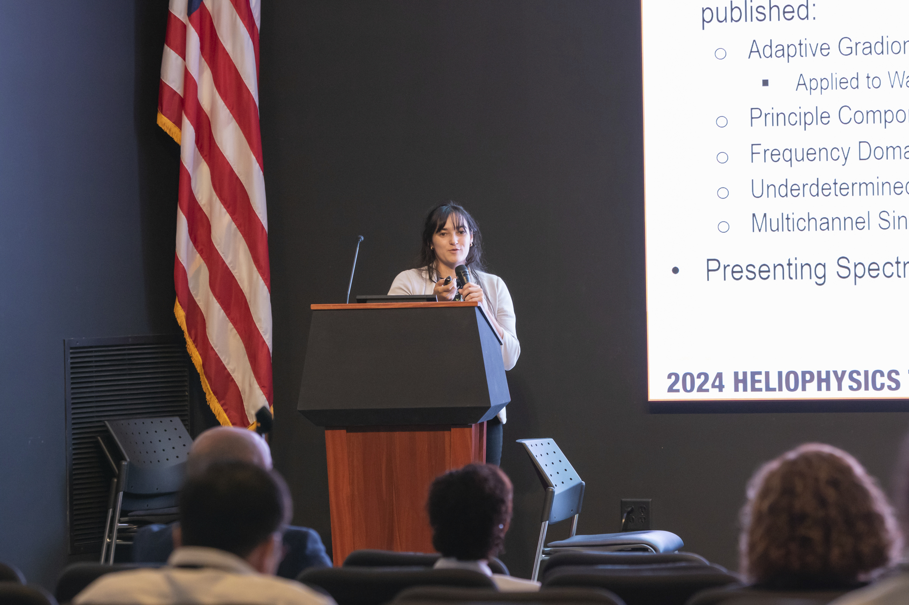

Hi, I’m Allison Flores — a Ph.D. candidate in Electrical & Computer Engineering at the University of Iowa, passionate about teaching and mentoring the next generation of engineers and scientists. My approach blends theory with hands-on engagement, helping students connect abstract signal processing principles to real-world systems. Outside the classroom, I enjoy bartending, which surprisingly parallels teaching — both require presence, adaptability, and empathy in understanding others.
My teaching philosophy combines cognitive constructivism and social constructivism, emphasizing
that students learn best when actively connecting new information to prior knowledge and sharing understanding collaboratively.
I aim to move beyond “good teaching” — which often focuses on content clarity — to **meaningful engagement**, where learning is co-constructed
through dialogue, curiosity, and experimentation.
My design of instruction often follows Backward Design principles (Wiggins & McTighe), ensuring every activity supports
measurable outcomes. Drawing from behaviorist elements for skill mastery and cognitivist strategies for problem-solving, I
use real data-driven examples and storytelling to make technical content accessible and memorable.
Developed an instructional module on convolution for undergraduate signal processing students. The module integrates active learning, simulations, and real-time feedback mechanisms to reinforce both conceptual and procedural understanding.
The target learners were sophomore-level electrical engineering students. Through surveys and instructor interviews, I identified that most students struggled with visualizing convolution and linking it to system responses — a gap between mathematical computation and physical intuition.
The final design incorporated interactive MATLAB demonstrations and guided reflections. By encouraging exploration rather than rote calculation, the project aligned with constructivist principles and received positive feedback for improving conceptual retention.